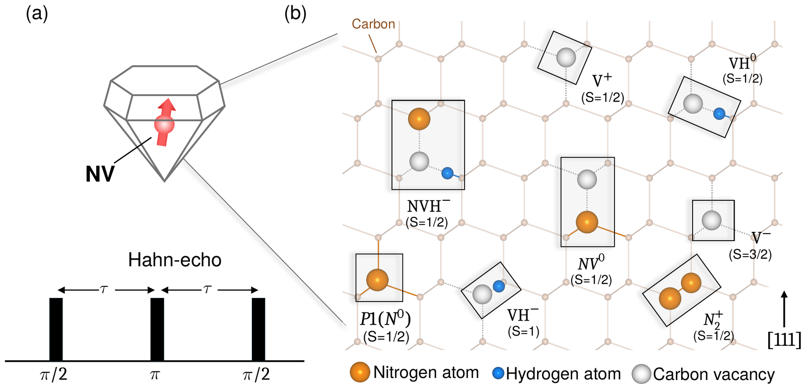
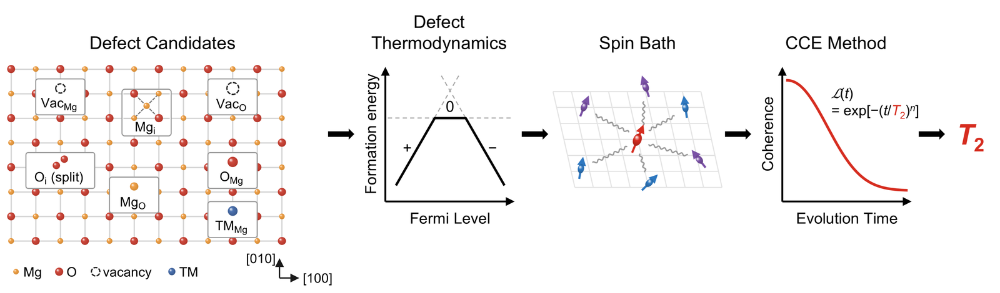

1Department of Quantum Information Engineering, Sungkyunkwan University, Suwon, Gyeonggi, Republic of Korea
Spin qubits in solids, such as the nitrogen-vacancy (NV) center in diamond, are leading platforms for quantum sensing and quantum networks. Their performance is limited by decoherence: the qubit loses quantum information through magnetic interactions with surrounding defects and impurities that form a fluctuating "spin bath." Understanding which defects cause decoherence, and how, is key to engineering better quantum materials.
Our group develops theoretical and computational approaches to quantum materials and solid-state qubits, combining first-principles electronic-structure calculations, quantum many-body spin-dynamics simulations, and close comparison with experiment to predict defect properties and qubit coherence from the atomic scale.
In this talk, I will present a predictive framework for decoherence of NV ensembles in diamond (Fig. 1) [1]. Instead of approximating real defect populations as a single homogeneous bath, we build defect-resolved spin Hamiltonians for nitrogen-, vacancy-, and hydrogen-related defects. We find that coherence depends not only on defect density but also on defect identity and bath composition: mixed defect populations can suppress or enhance decoherence. Our calculations reproduce magnetic-field-dependent Hahn-echo measurements across defect concentrations and identify vacancy-related defects as critical contributors beyond the conventional nitrogen (P1) bath. I will close by discussing opportunities for SKKU–Rice collaboration on qubit materials, defect engineering, and quantum sensing.

Fig. 1. Paramagnetic defects in diamond and central spin model. (a) Schematic of the negatively charged nitrogen-vacancy center in diamond subject to a Hahn-echo pulse sequence. (b) Representative paramagnetic defects considered in this study.
H. Park, H. Jeong, H. Kim, C. Findler, F. Jelezko, S. Oh, J. Lee, G. Galli, H. Seo, npj Comp. Mater., in press (2026).
Yonghyun Kwon1, Taejoon Park2, and Hosung Seo1,2,*
1Department of Quantum Information Engineering, Sungkyunkwan University, Suwon, Korea
2SKKU Advanced Institute of Nanotechnology (SAINT), Sungkyunkwan University, Suwon, Korea
There is growing interest in finding defect-based spin qubits with long coherence times in industrially mature, CMOS-compatible hosts. A standard criterion for selecting a host is a low nuclear spin concentration, which provides a magnetically quiet environment [1]. However, electron spin baths from paramagnetic defects have rarely been considered, because assessing them requires knowing which defects form and at what concentrations.
Here, we develop an ab-initio framework combining hybrid density functional theory [2] and cluster-correlation expansion (CCE) theory [3] to link defect thermodynamics to qubit decoherence. Using MgO as a model host, we evaluate the electron spin bath arising from common intrinsic defects and unintentional transition-metal (TM) impurities under experimentally relevant thermodynamic conditions. We find that intrinsic defects are too scarce to appreciably limit coherence. TM impurities, by contrast, incorporate at low energy cost, and their electron spin bath dominates spin decoherence above sub-ppm concentrations. Thus, in MgO, TM impurities rather than the dilute nuclear spin bath can set the coherence time. Our framework is general and provides a new tool for assessing the magnetic noise environment of a wide range of candidate host materials.

Fig. 1. Ab-initio framework for spin bath characterization. Formation energies of candidate intrinsic defects and transition-metal (TM) impurities in MgO give their concentrations and charge states, which define the electron spin bath. CCE calculations of the qubit coherence ℒ(t) then give the coherence time T2.
S. Kanai, F. J. Heremans, H. Seo, et al., Proc. Natl. Acad. Sci., 119, e2121808119 (2022).
J. Heyd, G. E. Scuseria, and M. Ernzerhof, J. Chem. Phys., 118, 8207 (2003).
W. Yang and R.-B. Liu, Phys. Rev. B, 78, 085315 (2008).
1SKKU Advanced Institute of Nanotechnology (SAINT), Sungkyunkwan University, Suwon, Korea
2Pritzker School of Molecular Engineering, University of Chicago, Chicago, IL, USA
3Center for Quantum Information, Korea Institute of Science and Technology, Seoul, Korea
4Department of Quantum Information Engineering, Sungkyunkwan University, Suwon, Korea
5Division of Nano and Information Technology, KIST School, Korea University of Science and Technology, Seoul, Korea
Scaling solid-state spin registers to many qubits is important for quantum computation, communication, and sensing, and requires a quantitative understanding of multi-qubit decoherence in complex spin environments. While first-principles approaches such as the cluster-correlation expansion (CCE) and its generalized form (gCCE) have successfully described single-qubit decoherence, their application to multi-qubit dynamics remains limited by the exponential growth of the Hilbert space. Tensor network (TN) methods can mitigate this growth, but long-range interactions in realistic spin baths limit their efficiency. Here, we introduce TN-gCCE, in which the cluster expansion factorizes the bath contribution into cluster correlations, while TNs compress the quantum state of each cluster into a matrix product state according to its entanglement structure. We benchmark TN-gCCE on nitrogen-vacancy (NV) registers in a 13C nuclear-spin bath, a canonical model system. For up to six NV centers, TN-gCCE shows excellent agreement with gCCE under Ramsey and Hahn-echo sequences. It also reduces the computational cost of six-NV Ramsey simulations nearly 20-fold. These results establish TN-gCCE as a scalable tool for predicting decoherence in large spin registers.
Fig. 1. Schematics of the NV register and the TN-gCCE method. (a) Eight-NV register in the presence of a 13C nuclear spin bath. The red and brown spheres indicate the NV spins and 13C nuclear spins, respectively. (b) Clustered bath spins from zeroth to third order of the gCCE method. The red and blue arrows indicate the NV centers and bath spins, respectively. (c) Workflow of the TN-gCCE method. The red box highlights the cluster-dynamics calculation performed using the TN formalism. The light orange boxes highlight the ED-based TDVP solver and the backward-reference evolution scheme as the more computationally efficient approaches identified in this study.